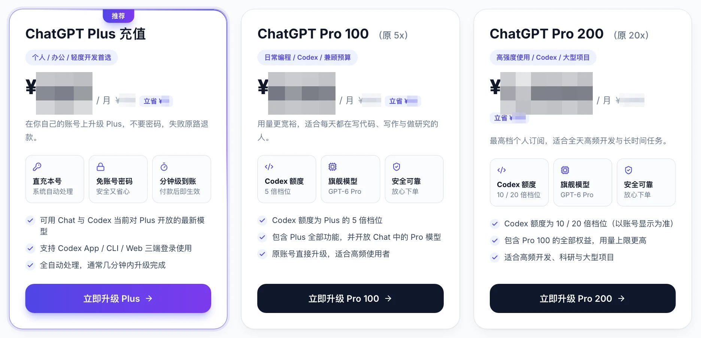
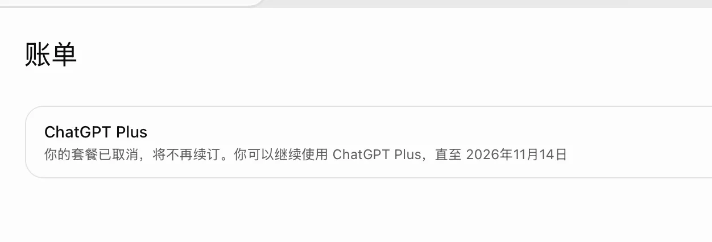

ChatGPT Plus 国内开通指南（2026）：支付宝 / 微信 3 分钟自助充值，附海外卡、礼品卡、代充对比
最后更新：2026 年 10 月 20 日（北京时间）· 本次核对了 OpenAI 官方套餐价格、ChatGPT Plus / Pro 的人民币开通价，并把自助充值流程的 7 张截图全部换成 10 月最新界面。价格或入口有变化会在这里更新，可以点右上角 Watch 收到通知；发现过期内容欢迎提 Issue。
没有海外信用卡，国内想开 ChatGPT Plus 或 Claude Pro，2026 年真正可行的路只有几条。这篇文章把每条路的真实成本、操作门槛和风险讲清楚，并给出一条我们自己每天在用的路线：用支付宝或微信付款，粘贴一段账号信息，几分钟后 Plus 直接开在你自己的账号上，不需要密码、不换号、不装任何软件。
文中四条路线都如实写出优缺点，按你的设备和付款条件自己选。实测部分用的是我们自己在用的平台，商业关系在文末「关于本文」里有说明。
Tip
不想折腾海外卡、礼品卡、美区 ID？ 直接用 支付宝 / 微信 付款，粘贴一段账号信息，3 分钟 Plus 开在你自己的账号上。不要密码、不换号、安卓 iPhone 都能用，不成功原路退款。
okai66.com — ChatGPT Plus / Pro、Claude Pro 自助开通 →
具体操作见下文 实测截图；想先了解其它方式再决定，往下看四条路线对比。
目录
- 30 秒结论：按你是谁，直接选
- 为什么国内开 Plus 这么难
- 2026 年 ChatGPT 套餐与价格
- 四条路线，逐条讲成本与风险
- 路线 A：官方直付
- 路线 B：海外虚拟信用卡
- 路线 C：美区 Apple 礼品卡 + iPhone
- 路线 D：第三方代充
- 实测：支付宝 / 微信自助充值 ChatGPT Plus（附截图）
- Claude Pro 同样可以：只需要账号 ID
- 一张表对比四条路线
- 掉订阅 ≠ 封号
- 怎么挑一个靠谱的代充（5 条硬指标）
- 充完之后要知道的几件事
- 常见问题 FAQ
- 卡在哪一步就看哪一段：自助排查
- 一句话总结
- 相关页面
30 秒结论：按你是谁，直接选
| 你的情况 | 推荐路线 |
|---|---|
| 手里有能用的 Visa / Master 海外卡，账单地址在海外 | 路线 A 官方直付，最省钱最正规 |
| 有 iPhone，愿意折腾美区 Apple ID，想完全自己动手 | 路线 C 礼品卡，一次搞定后续续费也方便 |
| 没有海外卡、不想折腾、只想几分钟用上 Plus | 路线 D 代充，选支持「自助下单 + 不要密码 + 不成功退款」的平台 |
| 要开 Claude Pro | 目前只有代充能用人民币开，流程比 ChatGPT 还简单（只要账号 ID） |
| 想省钱买「共享号」「合租」 | 别碰，原因见下文 |
为什么国内开 Plus 这么难
OpenAI 的收款走 Stripe，Stripe 对发卡行所在地和账单地址都有风控。国内银行发的双币卡（哪怕是 Visa / Master 标志）绝大多数会被直接拒绝，提示 Your card was declined 或 支付失败。这不是你卡的问题，是 OpenAI 这边的策略。
所以国内开 Plus 的本质，就是换一种 OpenAI 能收的钱：要么拿到一张海外发行的卡，要么走 Apple 的 App Store 内购，要么让一个已经有海外支付能力的第三方替你付。下面四条路线就是这三种思路的具体实现。
2026 年 ChatGPT 套餐与价格
| 套餐 | 官方价格 | 适合谁 |
|---|---|---|
| Free | $0 | 偶尔用用 |
| Plus | $20 / 月 | 日常写作、资料分析、中等强度 Codex |
| Pro 100（原 5×） | $100 / 月 | 经常用 Codex / Pro 模型 |
| Pro 200（原 20×） | $200 / 月 | Pro 100 也经常用完的重度用户 |
| Business / Team | $25–30 / 人 / 月 | 团队协作 |
说明：
- 官方价格不含税，部分地区结账会另加税费；App Store 内购价为 $19.99，有的地区同样会加税。
- 国内代充的人民币价格一般在官方价基础上加 ¥15–40（渠道成本 + 汇率），Plus 市场价约 ¥160–190 / 月。
- 5× / 20× 指的是 Codex 相对 Plus 的额度档位，不代表所有模型和工具的次数同比例增加。
四条路线，逐条讲成本与风险
路线 A：官方直付（有海外卡就选它）
怎么做： chatgpt.com → Upgrade → 填一张海外发行的 Visa / Master 卡，账单地址填卡对应的海外地址。
成本： $20 + 可能的税费，按当天汇率折算约 ¥145–160。
优点： 最正规、最便宜、自动续费不用操心。
风险 / 门槛： - 卡必须是海外发行。国内银行的双币卡、全币种卡基本都会被拒。 - 账单地址要和卡匹配，随便填一个美国地址有概率过，但后续风控可能导致订阅被取消。 - 一旦卡被拒 2–3 次，这个账号可能会被 Stripe 标记，之后换卡也难过。
结论：有卡直接上，没卡别硬试，试多了反而影响后面走别的路。
路线 B：海外虚拟信用卡（成功率越来越低）
怎么做： 在虚拟卡平台（Dupay、NobePay 等）注册、KYC、用 USDT 或人民币充值，开一张美国 BIN 的虚拟卡，再去官网绑卡。
成本： 开卡费 ¥10–100 不等 + 充值手续费 1–3% + 月费（部分平台），首月综合成本往往 ¥180 以上，而且平台随时可能跑路或冻结余额。
优点： 开通之后可以给多个服务付款（Claude、Midjourney、Google One 等）。
风险 / 门槛：
- 2025 年下半年起，OpenAI 对常见虚拟卡 BIN 的拒付率大幅上升，很多卡段直接 declined。
- 需要 KYC（上传身份证），部分平台还要求用 USDT 入金，对普通用户门槛很高。
- 平台本身的合规风险：余额冻结、跑路、国内监管收紧，都有先例。
结论：适合本来就有加密货币和多项海外订阅需求的技术用户，不适合只想开一个 Plus 的人。
路线 C：美区 Apple 礼品卡 + iPhone 订阅（门槛高但完全自助）
怎么做： 1. 注册或切换一个美区 Apple ID，付款方式选 None，地址填美国免税州（如 Oregon）的地址。 2. 在支付宝「出境」里找 Apple 礼品卡入口，购买一张 $20 美区 Apple Gift Card（约 ¥135–140，随汇率波动）。 3. 把礼品卡兑换到这个美区 Apple ID 的余额里。 4. iPhone 上用这个 Apple ID 登录 App Store，下载 ChatGPT App，在 App 内升级 Plus，用余额支付。
成本： 礼品卡约 ¥135–140 + 内购价 $19.99（免税州无税），实际每月约 ¥140–150，是没有海外卡的情况下最便宜的方式。
优点： 全程自己操作，不经过任何第三方；续费只要再买一张礼品卡。
风险 / 门槛： - 必须有 iPhone / iPad，安卓用户走不通。 - 美区 Apple ID 的注册和「付款方式选 None」这一步，很多人会卡住。 - 礼品卡只能买固定面额，$20 卡刚好够 Plus 一个月，Pro 就要买多张。 - 支付宝上的礼品卡入口偶尔会下架或限购。 - App 内订阅是 Apple 代扣，退款要找 Apple，不是找 OpenAI。
结论：动手能力强、有 iPhone、只开 Plus 的人，这条路值得走一次；之后每月 10 分钟就能续。
路线 D：第三方代充（最省事，但要会挑）
怎么做： 在代充平台选套餐，用支付宝 / 微信付款，平台用自己的海外支付能力把订阅开到你的账号上。
成本： Plus 市场价 ¥160–190 / 月，比礼品卡贵 ¥20–40，换来的是不用折腾和安卓也能用。
优点： 几分钟到账，支付宝微信直接付，不需要 iPhone、不需要海外 ID，Pro 和 Claude 也能开。
风险 / 门槛： - 市面上代充鱼龙混杂。要你账号密码的、价格明显低于成本（¥100 以下）的、只有淘宝闲鱼个人店没有网站的，都要小心。 - 低价代充常用的是盗刷卡或黑产礼品卡，开通后几天内被 OpenAI 回滚，订阅消失（俗称「掉订阅」）。 - 交付方式差别很大：有的要你发密码人工登录，有的只需要一段会话信息自动充值。后者安全得多。
结论：这是大多数人的最终选择。怎么挑，下面有一节专门讲；「会话信息 + 自动充值」这种交付方式具体长什么样，下一节放实测截图。
直接去 okai66.com 自助开通 ChatGPT Plus（支付宝 / 微信，不要密码） →
实测：支付宝 / 微信自助充值 ChatGPT Plus（附截图）
以下是 2026 年 10 月在 OKAI66 上实际操作的流程，共 4 步，从付款到 Plus 生效通常 3 分钟以内。截图里的价格做了遮盖，以站内实时价格为准。
第 1 步：选择套餐
打开套餐页，选 Plus、Pro 100 或 Pro 200，点「立即充值」。

第 2 步：复制并粘贴账号信息
2.1 在电脑或手机浏览器里登录你要充值的 ChatGPT 账号（建议 Chrome，关掉会改动页面的插件）。
2.2 在同一个浏览器里打开 chatgpt.com/api/auth/session，页面会显示一段 JSON 文本，全选复制。这段内容叫「会话信息」，是你当前这次登录的临时凭证：不包含密码，拿到它也改不了密码、改不了邮箱、登不出你；它有有效期，充值完成后平台会立即删除，你也随时可以在「设置 → 安全 → 登出所有设备」让它作废。

2.3 回到下单页，粘贴到输入框。系统会自动校验并显示这个账号的邮箱、用户名和当前套餐，确认是你要充的账号。如果账号已经是 Plus，页面会提示「将覆盖现有会员」；如果账号处于欠费 / 宽限期或在 Team 工作区里，这一步就会直接拦下来，不会让你白付钱。

第 3 步：确认订单并付款
3.1 填一个你记得住的手机号或邮箱（只用于查订单和售后），点「确认订单，去支付」。

3.2 选支付宝或微信。电脑上扫码，手机上直接跳转付款。页面会显示商品金额和预估手续费，实付以支付页面为准。

在线付款有 2% 的第三方支付手续费（支付平台收的）。不想出这笔钱，可以加客服微信直接开通，免手续费。
第 4 步：等待到账，核对会员
4.1 付款后系统自动充值，订单页依次显示「已付款 → 充值中 → 完成」。完成后可以下载订单凭证。

4.2 回到 ChatGPT 刷新页面（没变化就退出重登），在「设置 → 账单」里确认已经显示 Plus 和到期日。

页面上会写「套餐已取消，将不再续订」，这是正常的：代充开通的会员不会自动扣款，到期前回来再充一次就行。
整个过程平台拿不到你的密码，充值完成后会话信息也会自动删除。如果任何原因导致没充成功，原路退款，不设门槛。
照着上面 4 步，现在就去开通 → okai66.com →
要开 Pro 100 / Pro 200，流程完全一样，细节和注意事项见 ChatGPT Pro 国内充值指南。
Claude Pro 同样可以：只需要账号 ID
Claude 比 ChatGPT 更难用国内方式付款：官网同样拒国内卡，App Store 虽然也有内购，但 Claude 对账号地区的限制更严。目前用人民币开 Claude Pro，基本只有代充一条路。
好在 Claude 的交付方式比 ChatGPT 还简单，连会话信息都不需要，只要一个账号 ID：
- 登录 claude.ai，点左下角头像 → Settings → Account，复制 Organization ID（一串
8-4-4-4-12格式的字符，例如xxxxxxxx-xxxx-xxxx-xxxx-xxxxxxxxxxxx）。

- 在下单页选 Claude Pro，把 ID 粘贴两次（防止手误），系统自动校验。

- 填联系方式 → 支付宝 / 微信付款 → 等待到账，和 ChatGPT 完全一样。

- 回到 claude.ai，在「Settings → Billing」确认已显示 Pro。
Claude 的价格、Organization ID 安全性、常见失败原因，单独写了一篇：Claude Pro 国内开通指南。
去 okai66.com 开通 Claude Pro（只要账号 ID，支付宝 / 微信） →
一张表对比四条路线
| A 官方直付 | B 虚拟卡 | C 礼品卡 + iPhone | D 代充（会话信息自动充值） | |
|---|---|---|---|---|
| Plus 月成本 | ≈ ¥145–160 | ≈ ¥180+（含开卡、手续费） | ≈ ¥140–150 | ≈ ¥160–190 |
| 需要什么 | 海外卡 | KYC + USDT / 充值 | iPhone + 美区 ID | 支付宝 / 微信 |
| 安卓能用 | ✅ | ✅ | ❌ | ✅ |
| 开通耗时 | 1 分钟 | 半天到几天 | 1–2 小时（首次） | 3 分钟 |
| 能开 Pro | ✅ | 看卡段 | 要买多张卡 | ✅ |
| 能开 Claude | ✅ | 看卡段 | ❌（地区限制） | ✅ |
| 自动续费 | ✅ | ✅ | ❌ | ❌（到期前再充） |
| 要给密码 | — | — | — | 不需要 |
| 失败怎么办 | 卡被拒就没法用 | 余额可能冻结 | 找 Apple | 原路退款 |
掉订阅 ≠ 封号
很多人把这两件事混在一起，先分清：
- 掉订阅：Plus 标识消失，账号变回 Free，对话记录都在，可以重新开。原因通常是付款被 OpenAI 回滚（用了问题卡、礼品卡来源有问题）。
- 封号：账号无法登录或被禁用，一般是账号本身违规（用了代理 IP 被判定为高风险、内容违规、批量注册等），和用什么方式付款没有直接关系。
低价代充最常见的后果是掉订阅而不是封号。但掉过一次订阅的账号，再走官方直付会更容易被风控，所以第一次就选对渠道很重要。
怎么挑一个靠谱的代充（5 条硬指标）
- 不要密码。 只要会话信息或账号 ID 的平台，技术上拿不到你的账号控制权；要密码的，哪怕说「充完就改」也别信。
- 有独立网站，能自助下单、能查订单。 只在淘宝闲鱼微信群里收款的，出问题连订单号都没有。
- 价格不低于成本。 Plus 官方 $20 ≈ ¥145，低于 ¥140 的基本就是黑卡或盗刷。¥160–190 是正常区间。
- 写明失败退款规则，且是「原路退款」而不是「退到平台余额」。
- 充值前先校验账号。 能在付款前就告诉你「这个账号已经是 Plus / 在 Team 工作区 / 欠费中」的平台，说明它是自动化系统在跑，不是人工手充。
这 5 条对任何平台都适用，可以拿去逐条对照。
充完之后要知道的几件事
- 账号是你自己的。 订阅开在你的账号上，密码、邮箱、对话记录都和以前一样，不需要改任何东西。
- 到期不会自动扣款。 代充开的会员到期自动变回 Free，不会从你哪里扣钱；到期前 1–2 天回来再充一次即可，可以无缝衔接。
- 不要同一时间在多个地方充。 账号已经是 Plus 时再充，新的会覆盖旧的，不会叠加时长。
- 少用免费 VPN 和公共代理。 这是导致账号被风控、模型「降智」的主要原因，和付款方式无关。可以用 IP 风险检测工具看一下当前出口 IP 的风险等级。
- Team / Business 工作区的账号要先退出再充个人 Plus，否则会被拦下。
常见问题 FAQ
Q：微信 / 支付宝能直接付给 OpenAI 吗？
不能。OpenAI 官网只收信用卡（经 Stripe）和部分地区的 PayPal，没有任何国内支付方式。所有「支付宝开 Plus」本质上都是路线 C 或路线 D。
Q：国内信用卡到底能不能成功？
极少数人的某些卡偶尔能过，但没有稳定规律，而且被拒几次后账号会被标记。不建议拿主账号反复试。
Q：代充会被封号吗？
正规渠道（礼品卡、企业通道）不会。封号的原因是账号行为，不是付款方式。要避免的是低价黑卡代充导致的「掉订阅」，见上文。
Q：会话信息安全吗？别人拿到能干嘛？
会话信息相当于「当前这次登录的凭证」，能用来以你的身份读取 ChatGPT 页面，但不能改密码、不能改邮箱、不能让你登出。它有有效期，充值完成后平台会删除；你随时可以在 ChatGPT「设置 → 安全 → 登出所有设备」让它立即失效。
Q：Plus 和 Pro 怎么选？
日常写作、资料分析、偶尔写代码：Plus 够用。每天用 Codex 几个小时、Plus 额度经常用完、需要 Pro 模型：Pro 100。Pro 100 也经常用完：Pro 200。
Q：充值失败了怎么办？
正规平台会原路退款，充值失败当天按原支付方式退回，订单页能看到状态；超过 30 分钟还在「充值中」，带订单号联系客服。
Q：到期了怎么续？
重新下单一次即可。建议到期前 1–2 天充，新套餐会在旧的到期后无缝衔接。
Q：能开发票吗？
可以，联系客服补开票差价。充值完成后订单页也能下载订单凭证（不是发票）。
Q：企业 / 团队批量开通？
支持批量充值、对公转账，联系客服说明账号数量即可。
卡在哪一步就看哪一段：自助排查
阶段一：还没到支付页，就打不开 / 转圈
- 官网 Upgrade 按钮点了没反应：多半是网络问题，换一个节点或关掉浏览器插件再试。
- 代充下单页校验账号失败：确认复制的是完整 JSON（以
{开头}结尾），并且是在登录了目标账号的同一个浏览器里打开的chatgpt.com/api/auth/session。无痕窗口、不同浏览器都会拿到空的会话。
阶段二：进了支付页，但付不进去
- 官网
Your card was declined：换路线，不要反复试。为什么会被拒、哪些情况还能抢救，见 ChatGPT 绑卡被拒 Your card was declined 怎么办。 - 支付宝 / 微信扫码没反应：刷新订单页重新生成二维码；手机浏览器下单直接跳转付款更稳。
- 付款金额和套餐价不一致：差额是 2% 支付手续费，属正常；想免掉就加客服开通。
阶段三：付款过了，但会员没到 / 账号异常
- 订单页显示「已付款」但一直不「完成」：先等 5–10 分钟，高峰期有排队；超过 30 分钟联系客服。
- 订单显示「完成」但 ChatGPT 还是 Free：退出重新登录，或清一下缓存；仍然没有，在「设置 → 账户」截图给客服。
- 提示「需要完成安全验证」或「重新提交会话信息」：按页面提示操作一次即可，这通常是账号在充值途中登出了。
- 充完几天后 Plus 消失：这是「掉订阅」，找平台按退款规则处理；如果是在正规渠道充的，联系客服补充。
一句话总结
有海外卡走官网；有 iPhone 愿意折腾走礼品卡；其它情况选一个不要密码、能自助下单、不成功原路退款的代充，3 分钟搞定。
okai66.com — 支付宝 / 微信开通 ChatGPT Plus / Pro、Claude Pro →，站内有完整的 ChatGPT / Claude 图文教程。
相关页面
- Claude Pro 国内开通指南：支付宝 / 微信付款，只要账号 ID
- ChatGPT Pro 国内充值指南：Pro 100 / Pro 200 怎么开
- ChatGPT 绑卡提示 Your card was declined 怎么办
- 本文网页版（手机阅读更方便）：dsom-w.github.io/chatgpt-plus-guide
关于本文
- 本文作者与 OKAI66 存在商业关系，该平台提供 ChatGPT / Claude 订阅的付费充值服务；文中「路线 D」和实测部分涉及该产品，请结合其它路线自行判断。
- OKAI66 为独立第三方服务平台，与 OpenAI、Anthropic、Apple 均无隶属关系。ChatGPT、Claude 等名称归其各自权利方所有，订阅权益以你账号内实际显示为准。
- 内容按 CC BY-NC-SA 4.0 许可，转载请注明出处。发现价格或流程变化，欢迎提 Issue 或 PR。